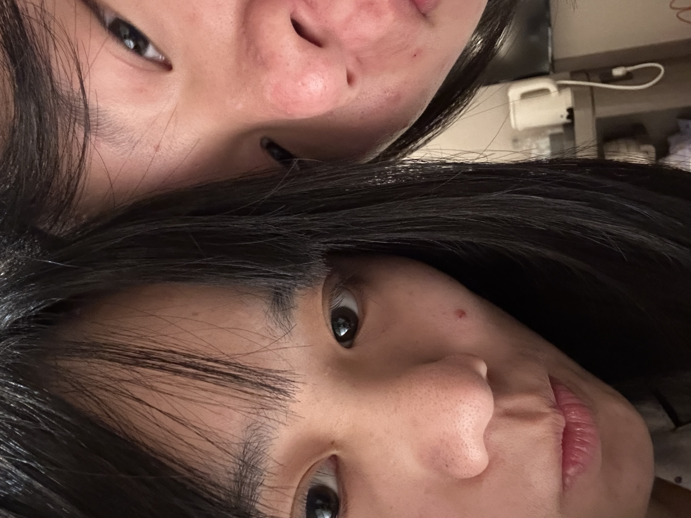
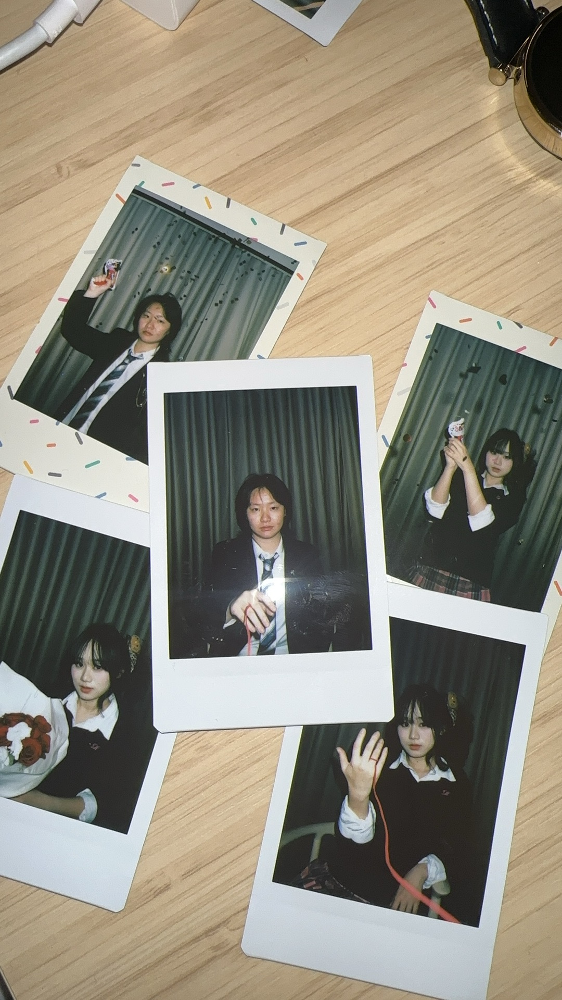
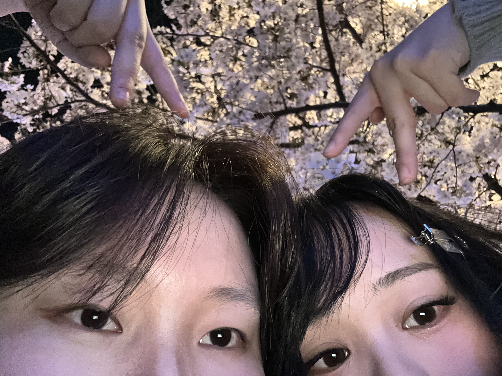
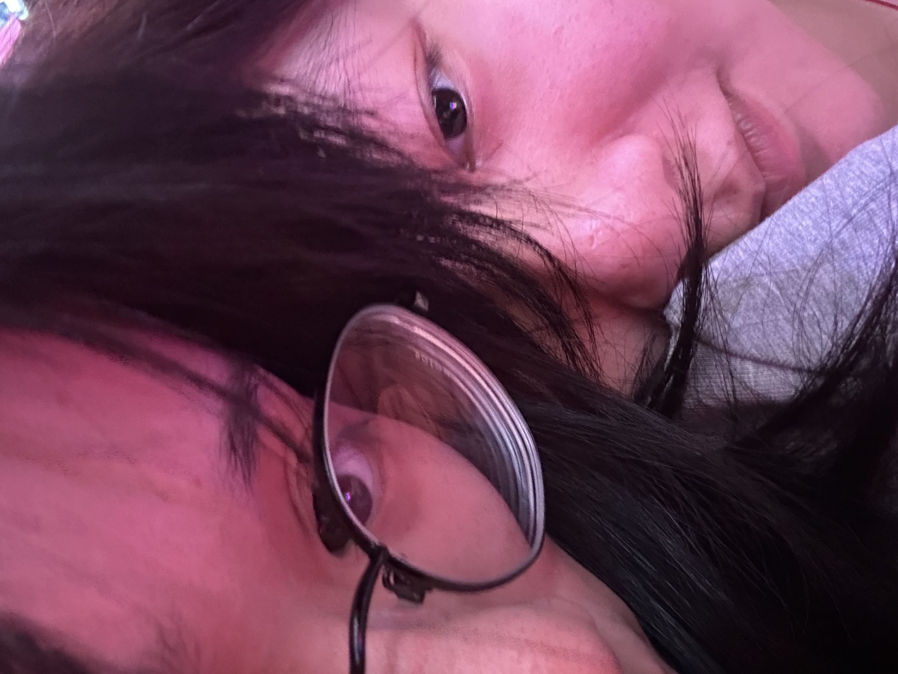

520 纪念日快乐 把“想你”过成了真的日常
本来只是想做一个普通网页给你，可是把这些照片和那段带着对戒背景的纪念视频放在一起的时候， 我突然觉得，我们已经把喜欢写成了一本会发光的小小手账。

南京的早晨
合肥 JKDK
樱花树下的小猫我们的时间线
如果把喜欢拆开看，它不是一句很大的表白，而是很多个很具体的时刻。 是醒得很早的一张合照，是认真打扮的一次出门，也是你在的城市里，我一次又一次想奔向你的心情。

如果把想念排成聊天框
我想把这些话留给你看。不是多漂亮的话，就是我们平时真的会这样讲话，所以每一句都很像我们。
“只对你双标只溺爱你。”
2025.09.30 · 那时候我们才刚刚靠近一点点，你就已经这样明目张胆地偏爱我了。“见面之前我可以多陪陪你。”
2025.10.02 · 你说这句话的时候，我就觉得自己已经被你好好放在心上了。“我现在也在好好爱。”
2025.11.01 · 这句我一直都很喜欢，因为它不是热闹的一句喜欢，是很认真的一句。“亲亲小宝宝。”
2025.12.25 · 到了冬天，我们说话已经变得这样亲，像每天都要贴一下才安心。“我亲亲小宝宝嘛。”
2026.01.25 · 新的一年里你还是会这样哄我，我每次看见都会一下子软下来。“我有点想你了猫！”
2026.02.13 · 二月的想念还是会这样跑出来，光是看见这句我就会开始想抱你。“乖宝乖宝。”
2026.03.21 · 到了三月，我们连叫对方的语气都已经变成很熟悉很自然的亲近。“亲亲小宝宝。”
2026.04.03 · 四月你也还是会这样哄我、亲我，我就会觉得被喜欢原来可以这么踏实。“老婆乖乖等我哦。”
2026.05.11 · 看到这句的时候我就会想，原来被老婆哄着等一等也是一件很幸福的事。把聊天记录变成恋爱数据
我把从 2025 年 10 月 15 日到 2026 年 5 月 20 日的聊天记录偷偷整理了一下。 原来喜欢一个人，真的会在这么多句日常里留下痕迹。
从我们在一起开始，到现在已经聊了这么多句。
原来我们真的把彼此放进了每天。
很多普通的一天，都因为有你变得不普通。
--
--
我们的聊天词云
这些词一多起来，我就知道我们真的把喜欢说进了日常里。
最常说的话
翻出来看才发现，我们平时真的就是这样黏黏糊糊地讲话。
偏爱关键词榜
把喜欢拆开看，会变成宝宝、亲亲、老婆、想你这样很具体的词。
聊天时段分布
一天下来最常在哪些时间想起彼此，也能从记录里看得很清楚。
再把这几个月慢慢翻一遍
我把我们这一路又往回看了一次。每个月都不一样，但每个月里都有很明确的你，也都有越来越明显的喜欢。
很多天都被我们聊亮了
原来把日历摊开以后会这么明显。那些普通的日子，因为一直有你在回我、陪我、想我，就全都发着光。
翻到哪里，哪里都有我们
我很喜欢这一页，因为它不像一句话那么直接，却能让我一下子看见我们是真的把彼此过成了习惯。
从 2025 年 10 月 15 日到现在，原来真的已经有这么多天，都在和你说话。
我们平时都怎么叫对方
翻聊天记录的时候我才发现，喜欢一个人以后，连称呼都会慢慢长出很多版本，而且一看就知道是属于我们的。
我叫你的时候
我一开口叫你，就总是会越叫越近，越叫越舍不得收回去。
你叫我的时候
你叫我的那些名字，我一看到就会知道，你现在一定是在很认真地靠近我。
那段纪念视频
我还是想把这段视频单独放在这里。 每次点开它，我都会再一次觉得，和你走到现在真的很好。
有些日子，值得被单独收藏
是第一次见面时的紧张，是拍照时偷偷看向彼此的眼神， 是去你所在的城市时我一点都不觉得远的路程，也是今天打开这个页面时，我还是会怦然心动。
视频里的对戒背景很像一个特别安静的承诺。没有很大声，但足够坚定。
想送给你的歌词
听到这段歌词的时候我就很想起你，所以也想把它放在这里给你看。
这个乱糟糟的世界 祈祷我们可以避开所有苦难 如果可以的话 跟你一起我想时间变得缓慢 直到我们慢慢老去 春夏秋冬感受四季转换 日子一天一天平平淡淡 我想要的多么简单 所以当下我最大的愿望 就是能够和你维持现状 当我们靠在一起吹着晚风 看月亮还是照常挂在天上 想把这份礼物送到你的手中 我希望它最好不要 delay
“平平淡淡”和“慢慢老去”这两个愿望，真的很像我想和你一起拥有的以后。写给你的小情书
这封信我想慢一点给你看，所以做成了点开以后才会出现。
其实做这个网页的时候，我脑子里一直有一个问题，就是我今天到底想和老婆说什么。 想了很久以后我发现，我好像不是想说一句很厉害的话，也不是想写一封看起来很漂亮很工整的信。我只是想在 520 这天，很认真地告诉老婆，我到现在还是会因为喜欢你这件事而心软，会因为想到你而开心，会因为看见这些照片和聊天记录就忍不住一直往下翻，一边翻一边想，原来我们已经一起走了这么多天。 我有时候真的会觉得很神奇。明明你现在已经变成我生活里很自然的一部分了，自然到我会下意识想和你说话，下意识想让你知道我在干嘛，下意识在一些很小的时候想起你，可是我回头看又会觉得，怎么就真的走到这里了，怎么就真的这么喜欢了，怎么就真的会在分开以后这么想见，在见面之前又这么期待。 而且我觉得老婆对我来说，不只是恋爱的对象，不只是我会说喜欢的人。你更像一个会让我安静下来的人。以前我情绪乱的时候，会一个人想很多，会自己钻牛角尖，会突然觉得空空的，不知道该怎么排解。现在我还是会有不开心的时候，还是会有难受、别扭、委屈的时候，可是我不会像以前那样觉得自己只能一个人待着了，因为我知道我还可以去找老婆，我知道你会听我说话，会叫我不要憋着，会耐心地和我讲很多很多话。 我真的很喜欢这种感觉。不是那种表面上热闹的喜欢，而是一种很稳的、很具体的、会落到每一天里的喜欢。是你叫我宝宝的时候，是你和我说晚安的时候，是你想我了就会直接告诉我的时候，是我心情不好你会把我捞回来的时候，也是我一边心疼你一边又会觉得，老婆怎么这么可爱、这么让人放不下的时候。 我也会心疼你。这个念头其实特别常见，常见到我已经不把它当成一种突然冒出来的情绪了，而是我喜欢你以后很自然的一部分。你有压力的时候，你委屈的时候，你掉眼泪的时候，你做噩梦的时候，你身体不舒服的时候，我都会忍不住想，要是我现在就在你旁边就好了，要是我可以马上抱住你就好了。虽然很多时候我能做的事情没有那么多，但我还是会很想让老婆知道，你不是一个人，你有我，我是很坚定地站在你这边的。 其实我也不是一直都那么厉害。我也会敏感，会乱想，会不安，会偶尔不知道怎么表达自己。可是我很喜欢我们现在这样，喜欢我们不是非要装成什么都不怕的人，喜欢我们会有情绪、会有别扭、也会有需要彼此哄的时候。因为这反而让我觉得，我们不是在演一段关系，我们是真的在很认真地过一段关系。 我现在越来越能确定一件事，就是我真的很喜欢和老婆一起生活的感觉。哪怕只是聊天，哪怕只是说一点很碎很碎的小事，哪怕只是一起听歌、一起发呆、一起各做各的事情，我都会觉得很满足。那种满足不是很夸张的快乐，而是一种很安稳的开心，像心里有个地方被你放得很妥当。 所以今天我想写给老婆的话，其实也很简单。 我想继续喜欢你。 想继续陪你。 想继续听你说很多很多话。 想继续在你不安的时候抱你，在你开心的时候和你一起开心，在你说想我的时候也立刻告诉你我也在想你。 我不知道以后会发生多少事情，也不知道未来到底会是什么样子，但是至少现在，我是很真诚地想把以后很多时间都留给老婆的。我想和你见很多很多次面，想和你再拍很多很多照片，想和你过更多纪念日，也想在很多年以后回头看的时候，还是会觉得当时喜欢上你、选择你，是一件特别好、特别值得庆幸的事情。 520 快乐老婆。 也谢谢你喜欢我。 以后也请继续待在我身边，让我继续很喜欢很喜欢你。